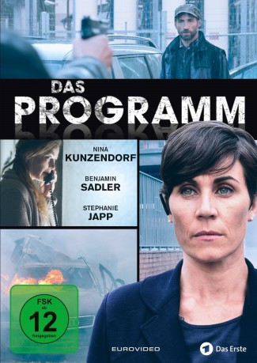

#2974 Das Programm
 gesehen am 02.02.2018
gesehen am 02.02.2018
 
 IMDB-Wertung: 7.4 / 10
IMDB-Wertung: 7.4 / 10  Metascore: 0
Metascore: 0 
Plötzlich ist alles anders. Was es heißt, sein Leben, seine Liebe und seine Zukunft zu verlieren und über Nacht als ein anderer Mensch in einer fremden Umgebung leben zu müssen, davon erzählt der zweiteilige ARD-Degeto-Event-Thriller DAS PROGRAMM: Als wichtiger Kronzeuge im Fall gegen den Gangster Philip Darankov bringt der Privatbankier Simon Dreher seine Familie in Lebensgefahr. Die LKA-Beamtin Ursula Thern beschließt, alle Familienmitglieder von heute auf morgen aus ihrem Alltag zu reißen und in ein Zeugenschutzprogramm zu stecken.
Jahr: 2016
Dauer: 86 Minuten
FSK: 12
Land: Deutschland Studio: ARDTonspuren:
Untertitel:
Auflösung: 1080p (1920x856) Größe: 5191 MB
Genre: Thriller, Krimi
Regisseur: Till Endemann
Drehbuch: Holger Karsten Schmidt
Soundtrack: Enis Rotthoff
Darsteller:
 Benjamin Sadler als Simon Dreher, 2015
Benjamin Sadler als Simon Dreher, 2015 Alwara Höfels als Nadja Lenz, 2015
Alwara Höfels als Nadja Lenz, 2015 Ludwig Blochberger als David Wendt, 2015
Ludwig Blochberger als David Wendt, 2015- Katrin Filzen als Lehrerin, 2015
 Kasem Hoxha als Adam Barisha, 2015
Kasem Hoxha als Adam Barisha, 2015 Heiner Lauterbach als Victor Miro, 2016
Heiner Lauterbach als Victor Miro, 2016- Natalie Spinell als Meike Schüttkus, 2016
- Nina Kunzendorf als Ursula Thern, 2015
 Carlo Ljubek als Mario Kreutzer, 2015
Carlo Ljubek als Mario Kreutzer, 2015- Stephanie Japp als Rieke Dreher, 2015
 Paula Kalenberg als Lona Dreher, 2015
Paula Kalenberg als Lona Dreher, 2015 Kai Ivo Baulitz als Lars Hameister, 2016
Kai Ivo Baulitz als Lars Hameister, 2016- Paul Faßnacht als Ernst Pramann, 2016
- Kai Scheve als Rolf Kahles, 2016
- Wladimir Tarasjanz als Philip Darankow
Datei: X:\2016(N-Z)\Programm, Das - Teil 1 (2016, FSK12, 1920x856).mkv seit 11.01.2016
Festplatte: HD 2016(A-Z)
 Es gibt insgesamt 182 Filme in der Gruppe '2016(N-Z)'
Es gibt insgesamt 182 Filme in der Gruppe '2016(N-Z)'